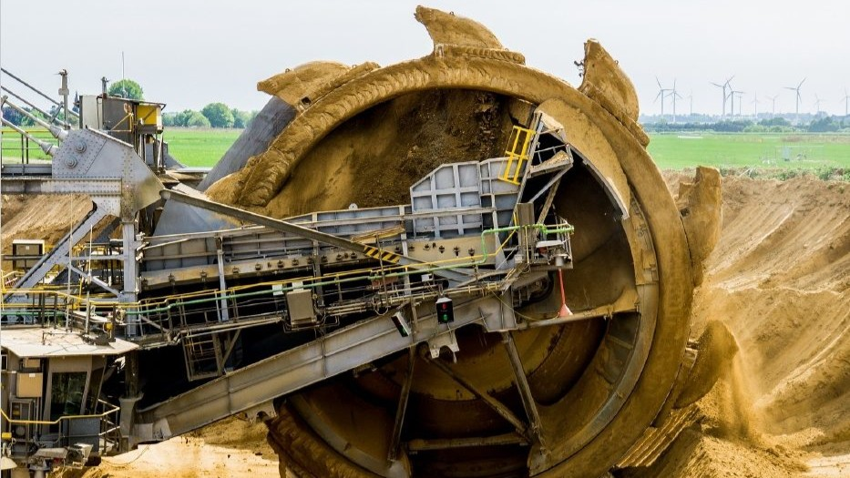

omer@lacivert.cc
Başiskele/KOCAELİ
Kurumsal
Hakkımızda
Sıkça Sorulan Sorular
Ormancılık
Kanun ve Yönetmelikler
Orman İzinleri
Projeler
Madde 16
Madde 17
Diğer
Galeri
İletişim
Proje Kaydı
Proje Detay Kaydı
Excel tabanlı proje kaydı detayları bu sayfada sunulmaktadır.
Madde 16
Madde 17
Diğer

Excel Kayıt Detayı
Proje konusu yükleniyor...
Listeye dön
Teklif al